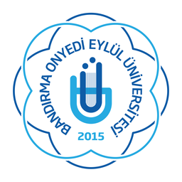

00:00.000
LOGOYU KODLA
Kodu yaz, logoyu inşa et
NASIL OYNANIR
Kod bilmene gerek yok
Ekrandaki kodu en hızlı sen yaz
SÜRE00:00.000
LOGO%0
logo.pyPython

Kartını al, story'de paylaş
Stajyer
Junior
Mid-level
Senior
ÖDÜL SPONSORU
İlk 3'e
Goldenfingers'tan menü
LOGOYU KODLA
Standımıza gel,
klavyeni konuştur.
yazilimmuhendisligi.com.tr
@ymtbanu
BANÜ Yazılım Mühendisliği Topluluğu

Bandırma Onyedi Eylül ÜniversitesiYAZILIM MÜHENDİSLİĞİ TOPLULUĞU